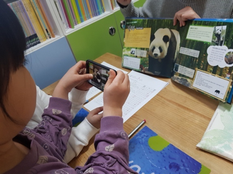

Information Science,
Cornell University,
Ithaca, NY
sl2668@cornell.edu
Duration Jan 2019~ Present

Role Recruitment, Experimental design, Survey, Data Analysis
Purpose
To explore the persuasive effects of the AR.
Targets Children aged 8~13 years old.
Findings AR group showed much more changes in perceptions toward environmental issues than book groups.
Implications Encourages adoption of new technology in environmental education.
Duration Summer 2019
Role Off-campus data collection, Baseline interview, Baseline survey
Purpose
To explore the impact of ciagrette package messages
Targets Urban and rural adult smokers
Duration June 2018~ December 2018
Role Building persona, Market research, Experiment, data analysis
Purpose
To examine the role of the hub agent in diverse contexts including social interactions and IoT setting.
Targets Families
Results Children preferred the hub agent, but people did not prefer the hub agent in IoT task.
Family members preferred the hub agent in social interactions.
Duration Jan 2017~ December 2017
Role Generating the client of algorithm for the news article during the Korean election periods, UX researcher
Results Our team developed the
NARe(News by Artifical Intelligence Reporter)